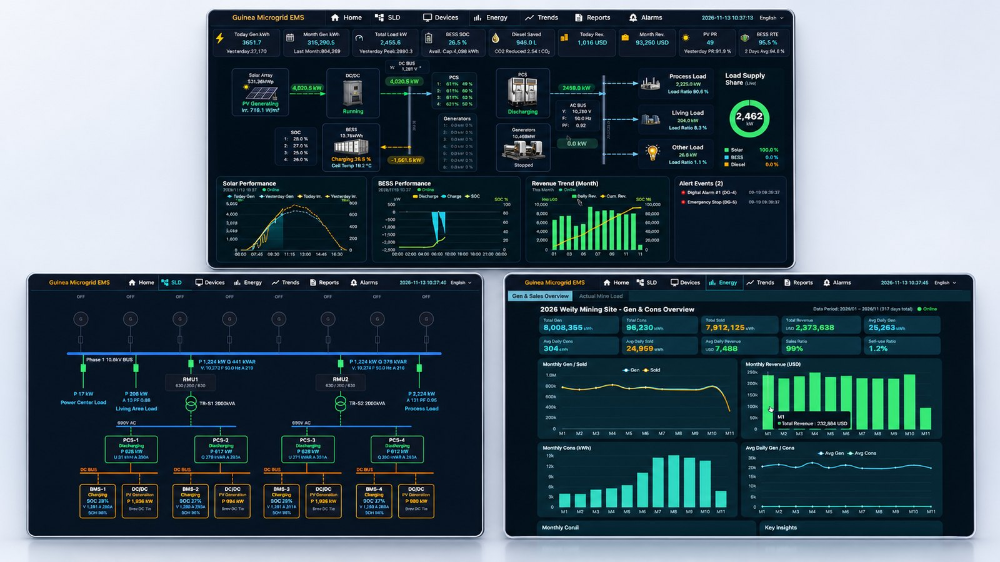
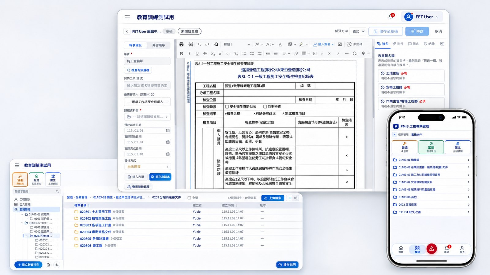
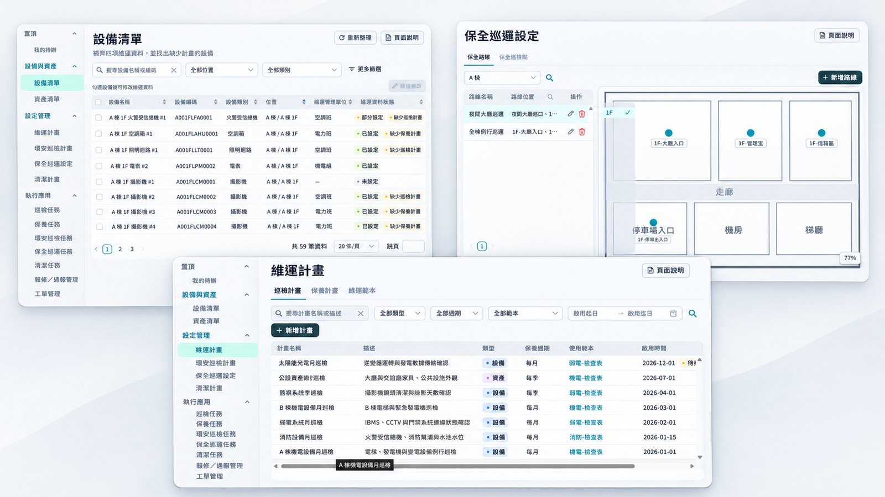
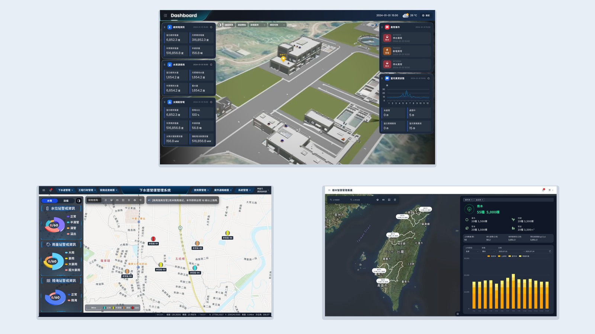
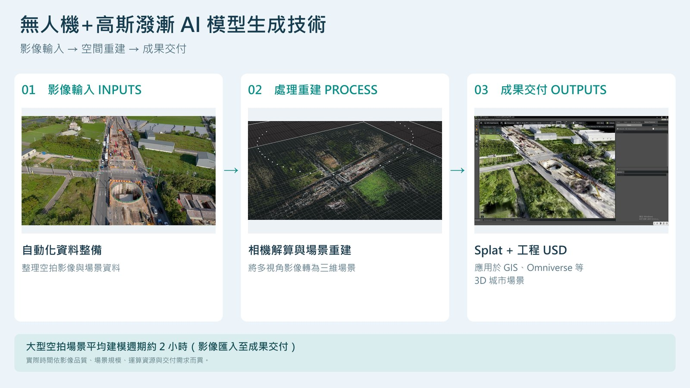

Construction Management
Progress, drawings, approvals and site records sit on one BIM model, so owners and contractors see the same building while it rises.
- 4D schedule on the model
- Drawings and approvals
- Quality and safety records
Built on engineering: advanced BIM plus years of project management, in one platform across design, construction and operations.
BUILDING LIFECYCLE
Progress, drawings, approvals and site records sit on one BIM model, so owners and contractors see the same building while it rises.
Plan BIM models, equipment data, system interfaces and O&M needs early, on one data standard, so nothing is remodelled or re-entered after handover and every system connects.
Existing buildings and whole campuses: SCADA, meters and sensors flow into one 3D twin, managed together instead of building by building.
GIS, BIM, IoT and AI layered at city scale: one screen for every building, network and sensor across the city.
Drag to turn the model
PLATFORMS
Building Digital Twin Command Center

Equipment locations, operating information and alarms, viewed in a 3D building context.
Monitoring views for HVAC, lighting, temperature and server room UPS equipment let operators review site conditions in their spatial context. Alarm markers on the building model help locate and investigate events. Connected equipment, update frequency and control capabilities depend on the project.
3D ModelAlarmsHVACLightingUPS
Energy Management · EMS / iEMS + ESS

Energy flow dashboards show how generation, storage and loads operate together.
Depending on project requirements, it can integrate SCADA systems from Siemens, Schneider and Honeywell and connect SCADA, programmable logic controllers (PLCs) and related equipment through protocols such as Modbus, TCP/IP and MQTT. Power data, storage status, energy trends and alarms provide operators with a consolidated view of site operations and abnormal events. Depending on the deployment, the solution can also support energy forecasting, monthly reports, storage maintenance schedules and cross-site performance comparisons.
SCADAModbusTCP/IPMQTTPLCESS
Project Management Information System · Construction

PMIS brings construction logs, electronic and custom reports, documents and official correspondence together for centralized access.
Electronic signatures, workflows and permission management support document routing and review among owners, supervisors and contractors. Mobile notifications, issue reporting, meetings, file management and training support daily work in the field. Depending on project requirements, the platform can integrate 3D models, onsite Internet of Things (IoT) devices and environmental control equipment to bring project information and field conditions into a shared context.
Logse-Reportse-SignatureWorkflowMobile3DIoT
Facility Management · Assets, Inspections and Maintenance

Maintenance, inspections and repairs, all built on one asset register.
NFC and QR code identification support smart inspections by connecting equipment or inspection points with relevant work information. Digital checklists, inspection records and work order management make field activities and follow-up easier to track. Recurring maintenance plans and equipment histories provide a foundation for preventive maintenance.
NFCQR CodeChecklistsWork OrdersPreventive Maintenance
GIS and Smart City Applications

Combine Cesium 3D geospatial visualization, GIS layers and IoT sensor data to review infrastructure and available operational information in its spatial context.
Applications include water, energy, green assets and public infrastructure management. Data sources, refresh rates and integration scope depend on the project.
Cesium3D GISGIS LayersIoT
BIM Data and Web Model Viewing

Combine optimized BIM models, browser-based 3D viewing and drawing data management to help teams explore project information.
The IFC federation QA workspace loads several IFC files into one combined view and lets teams browse elements through the IFC spatial structure (site, building, storey). Elements can be filtered by name, GlobalId, IFC class, storey and source discipline, then isolated, hidden or sectioned in X, Y and Z views. Checks sort results into errors, warnings and passes with a CSV download, and properties can be filled in for all filtered elements at once before the changes are exported. IFC (ISO 16739-1) is the open standard maintained by buildingSMART; supported IFC versions and fields, data completeness and viewing performance depend on the source software, export settings, model size and deployment.
BIMIFC · ISO 16739IFC2x3FederationGlobalIdCSVWeb 3D
Drone and AI Spatial Reconstruction

Combine drone imagery, 3D Gaussian Splatting and AI-assisted processing to reconstruct spatial scenes for engineering, facilities and urban projects.
Results provide visual context for 3D city scenes in GIS and NVIDIA Omniverse, and for potential BIM and smart-building applications. Data quality, deliverable formats and integration scope depend on the project.
Drone3D Gaussian SplattingAISplatUSDGISOmniverse
WORKS WITH
Siemens, Schneider, Honeywell, Modbus, TCP, MQTT, SCADA, PLC, IFC, RVT, DWG, DGN, NWD, SKP, GIS, Cesium, Drone 3D
CORE TECHNOLOGY
LIFECYCLE
Airhub · CIM
Site selection on 1:1 scanned terrain; simulate large equipment before anything is drawn.
Airhub
Designers and owners exchange models and decisions on one record.
PMIS
Contractor documents, drawings and approvals tracked against schedule, quality, safety and cost.
FM · EMS · CIM
SCADA, meters and sensors live in the 3D twin; AI forecasts energy and maintenance.